遊戲介紹:
《虹彩六號：圍攻行動》（英語：Tom Clancy's Rainbow Six: Siege，中國大陸譯作「彩虹六號：圍攻」），也常簡稱為虹彩六號、虹彩、R6或R6s，是一款由育碧蒙特婁開發、育碧軟體發行的第一人稱戰術射擊遊戲。本作是《虹彩六號系列》時隔8年後推出的正統續作，同時繼承了已被取消的《虹彩六號：愛國者》部分要素。《虹彩六號：圍攻行動》主打多人遊戲，遊戲系統著重於小隊對抗，而單人模式也以教學為主，不像前作更重視劇情。
遊戲模式:
< 炸彈模式 >：在傳統的團隊死斗規則外，炸彈模式中地圖上會出現兩個毒氣炸彈，攻擊方必須攻堅並安裝拆彈器並解除炸彈一次，防守方則要防止攻擊方安裝拆彈器或在炸彈被解除前破壞已經安裝的拆彈器。進攻方若施放拆彈器結束時間超出行動時間的話可以獲得延時，而防守方解除拆彈器遇到同樣情況則不會得到延時。排名戰當中，進攻方玩家可以在載入介面選擇拾起拆彈器，休閒模式當中則會將拆彈器隨機分配給一位進攻方玩家。行動時間內所有進攻方玩家都可以隨意丟下或拾起拆彈器。從復燃行動行動開始，排名戰安裝或破壞拆彈器所需的時間改為與電子競技模式相同的七秒，而休閒模式則為五秒。
< 人質模式 >：在傳統的團隊死斗規則外，人質模式中攻擊方必須攻堅並護送人質離開建築物，防守方則要防止攻擊方救出人質。若任一方誤傷人質且時間內沒有救起人質則算自動落敗。護送人質的幹員只能使用副武器。
< 肅清威脅模式 >：在傳統的團隊死斗規則外，肅清威脅模式中攻擊方必須攻堅並保全生化危害容器所在的房間，防守方則要防止攻擊方保全該房間。若攻擊方在占領時防守方也進入該房間則會暫停保全並保持保全進度，但此狀態保持3分鐘以上則防守方勝利。
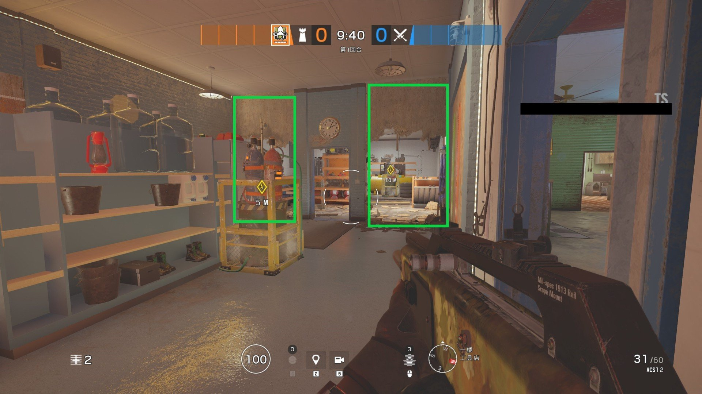 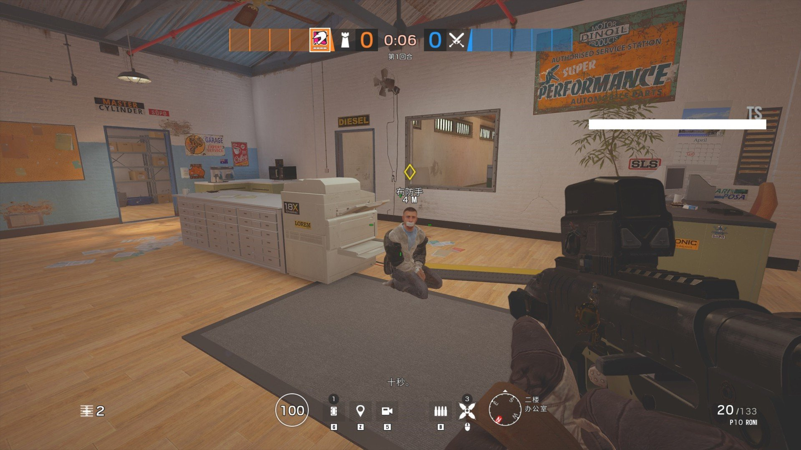 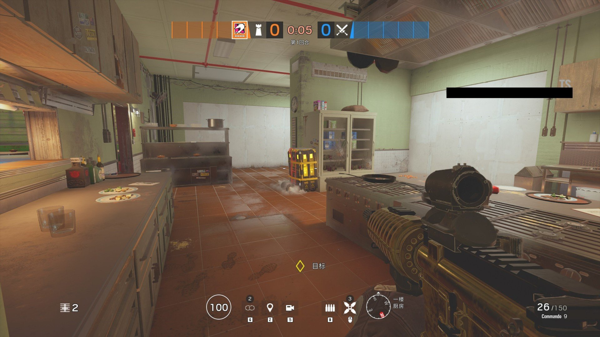遊戲地圖:
遊戲釋出時有10張地圖，後續追加11張額外地圖並對一些地圖進行過修改。復燃行動開始，夜間模式只會在自訂遊戲出現。不同模式下地圖池範圍有所差異。電子競技的地圖池通常不會應用於一般玩家。新進玩家模式中只會有銀行 (Bank)、領事館 (Consulate)、木屋 (Chalet)這三張圖。地圖會因應版本而有翻修之類的情形。
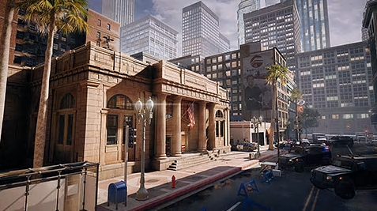 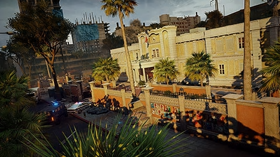
遊戲總表:
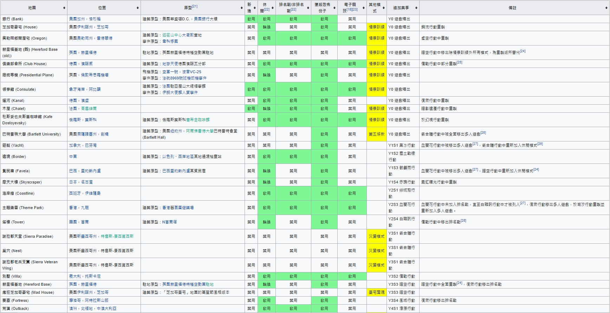進攻方/防守方選角畫面:
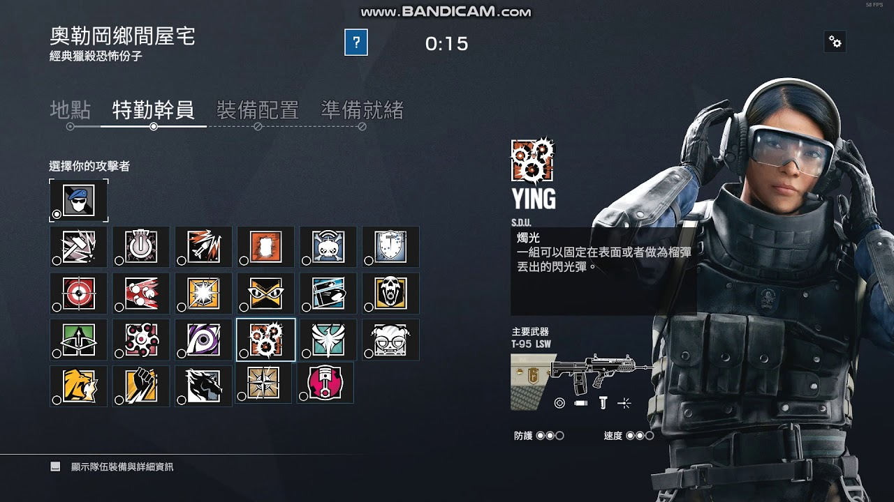 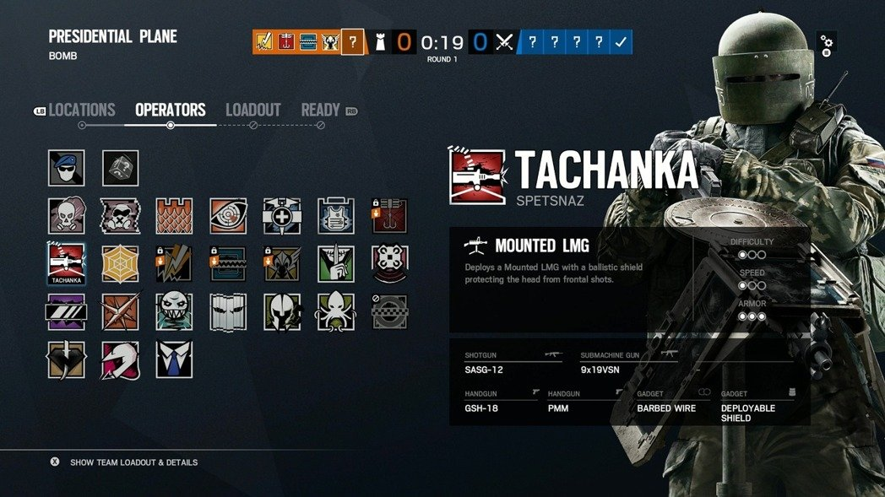物件介紹:
木板、強化牆面、繩降
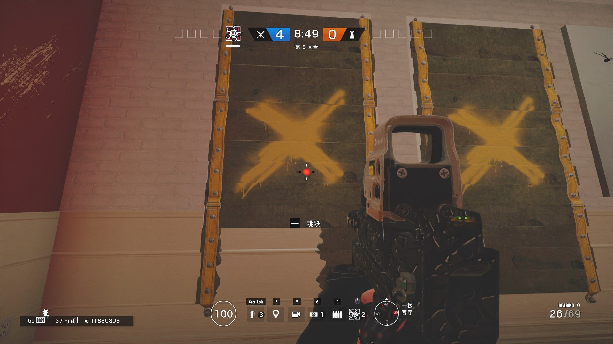 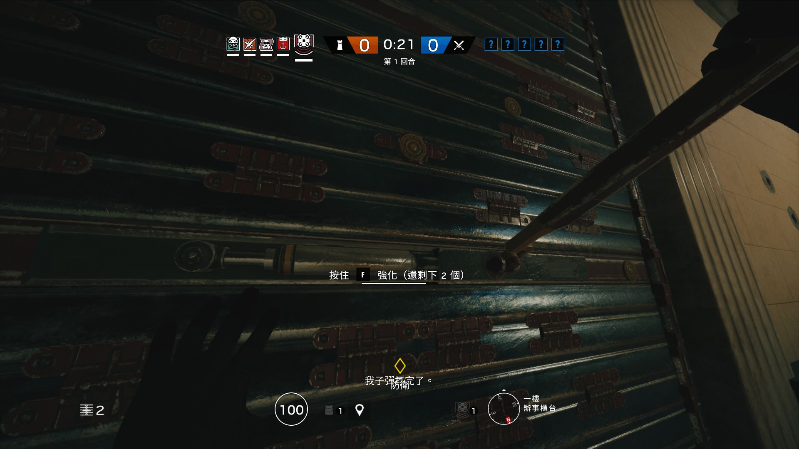 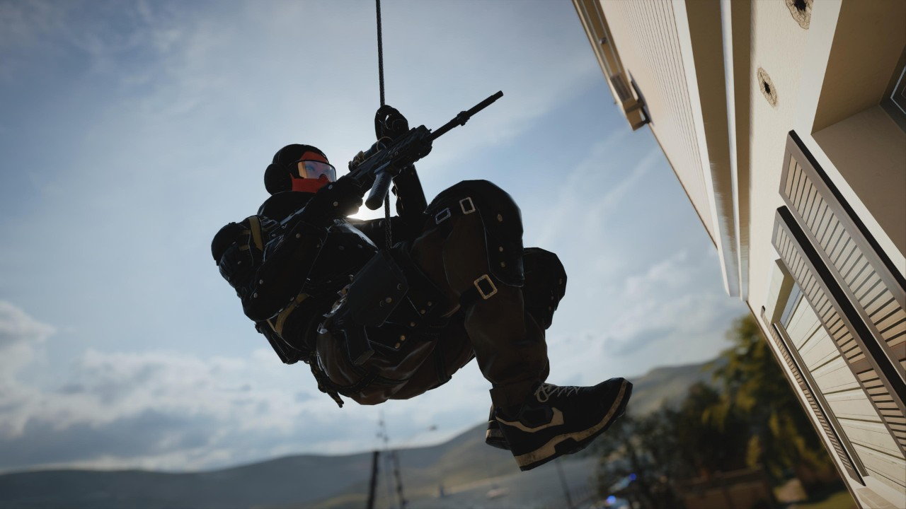